hello!!!!!!!!!!**********
Har du noen gang lurt på hvordan nettsider blir til?
Svaret starter nesten alltid med HTML og CSS. HTML bygger selve skjelettet på en nettside – overskrifter, tekst, bilder og lenker. CSS gir sidene farge, form og stil. Sammen skaper de alt fra enkle blogger til avanserte nettbutikker.
Selv i en tid med moderne rammeverk som React, Angular og Vue, ligger HTML-strukturen fortsatt i bunnen. Når du forstår HTML og CSS, blir det mye enklere å lære nye verktøy og teknologier. Du får et solid fundament som gjør deg mer fleksibel og verdifull som utvikler eller designer.
I Norge er etterspørselen etter folk som kan bygge brukervennlige og pene nettsider fortsatt høy. Med kunnskap i HTML, CSS og JavaScript kan du åpne døren til en spennende karriere – enten du vil lage egne prosjekter, jobbe i et kreativt byrå eller bidra til å utvikle digitale løsninger for bedrifter.
Å lære HTML og CSS handler ikke bare om koding – det handler om å skape, forme og dele ideer med verden.
HTML: Hva er dette?
Internett er en del av hverdagen vår.
Du har sikkert bestilt bussbilletter, kjøpt pizza eller handlet klær via en nettside eller app.
Der kan du velge blant mange produkter og tjenester – presentert med bilder, tekst, videoer og kanskje til og med musikk.
Men selv om vi gjør dette daglig, er det fortsatt mange som ikke vet hvordan det egentlig fungerer. Hvordan dukker alle bildene,
beskrivelsene og knappene opp på skjermen din – enten du bruker mobil eller PC?
Svaret ligger i HTML – språket som bygger opp innholdet du ser på nettet. Velkommen til HTML-verden!
HTML er et markeringsspråk som brukes til å lage nettsider, webapplikasjoner,
skrivebordsapplikasjoner og mobilapplikasjoner.
I dette prosjektet er det webutvikling og nettsider som er hovedtema, og vi skal derfor
ikke gå nærmere inn på de andre teknologiene som ble nevnt.
Et markeringsspråk er et regelsett som brukes til å definere formatering, struktur og innhold i et dokument ved hjelp av "tagger". En tagg kan beskrive hva slags data som skal vises.
I dette eksemplet kan vi si at hver eske tilsvarer en tagg,
mens innholdet i eskene tilsvarer informasjonen som taggen omgir.
La oss si at vi har tre forskjellige esker, hver med sitt innhold:
- eske1 inneholder et par Nike-sko
- eske2 inneholder sjokolade
- eske3 inneholder pizza
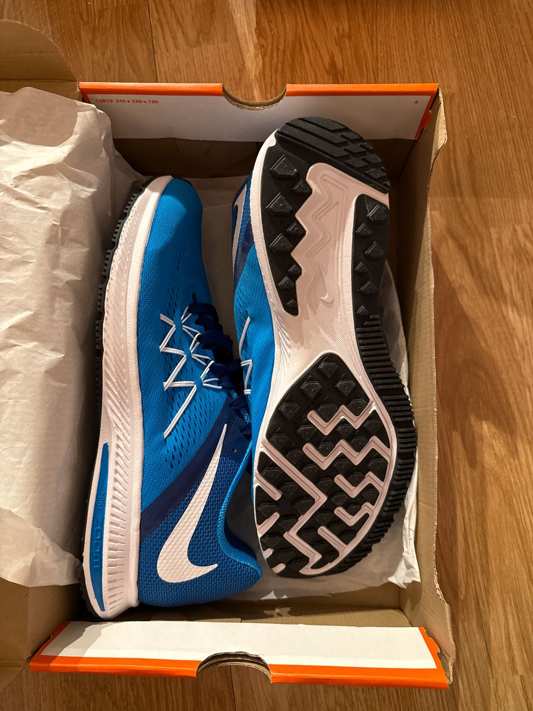
Hvis vi bruker en kodeeditor, kan disse eskene – altså taggene – se slik ut:
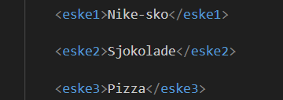
Men ekte HTML-tagger ser slik ut:
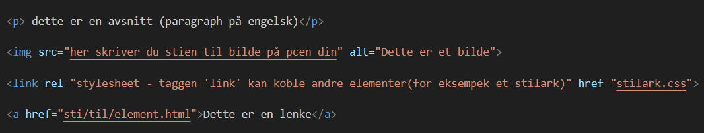
Grunnleggende HTML-tagger og deres funksjon
HTML-taggene forteller nettleseren om innholdet og strukturen til de ulike
elementene på nettsiden. At overskrifter får større skriftstørrelse, eller
at lenker blir blå og understreket, er en tilleggseffekt som mange nettlesere
gir teksten for å synliggjøre elementenes rolle.
I dag skal utviklere bruke et eksternt CSS-dokument (stilark) for å angi instruksjoner som kun
påvirker nettsidens utseende, selv om enkelte eldre versjoner av HTML har støtte for dette direkte.
For funksjonalitet benyttes et skriptspråk, hvor JavaScript er det mest brukte i dag.
Tagg
Forklaring
<!DOCTYPE html>
Deklarasjon som forteller nettleseren at dokumentet er skrevet i HTML5.
<html>
Den overordnede containeren for hele HTML-dokumentet.
<head>
Inneholder metadata om dokumentet, som for eksempel tegnsett og tittel.
<title>
Viser navnet på siden i nettleserens fane.
<body>
Inneholder det som vises på nettsiden, inkludert tekst, lenker, bilder, osv.
<h1>, <h2>, osv.
Overskrifter av forskjellige nivåer, hvor <h1> er den største og mest betydningsfulle.
<p>
Avsnitt som brukes for å gruppere tekst.
<a>
Anker-tagg som brukes til å lage lenker. href-attributtet angir hvor lenken går.
<ul> og <li>
En uordnet liste (ul står for "unordered list") og listeelementer (li står for "list item").
<br>
Linjeskift som brukes til å lage en ny linje uten å starte et nytt avsnitt.
<hr>
Horisontal linje som brukes til å visuelt dele opp innhold.
<img>
Brukes for å vise bilder på nettsiden.
<div>
En container som brukes til å gruppere innhold og strukturere siden.
Hva er en nettleser og hvordan fungerer den?
Det å oppsummere hele prosessen til en nettleser i bare noen få ord er ikke en lett oppgave, men vi kan si at
en nettleser er et program som henter informasjon
og viser den på dataskjermen. En nettleser består vanligvis av
flere komponenter – funksjoner – med ulike oppgaver. Den viktigste komponenten er gjengivelsesmotoren
(rendering engine), som har som oppgave å hente og tolke HTML-kode. I denne prosessen
bygger nettleseren en trestruktur kalt DOM (Document Object Model), som definerer hierarkiet
til elementene på en nettside.
Diagrammet nedenfor viser grafisk en oppsummering av prosessen som foregår når nettleseren kjøres.
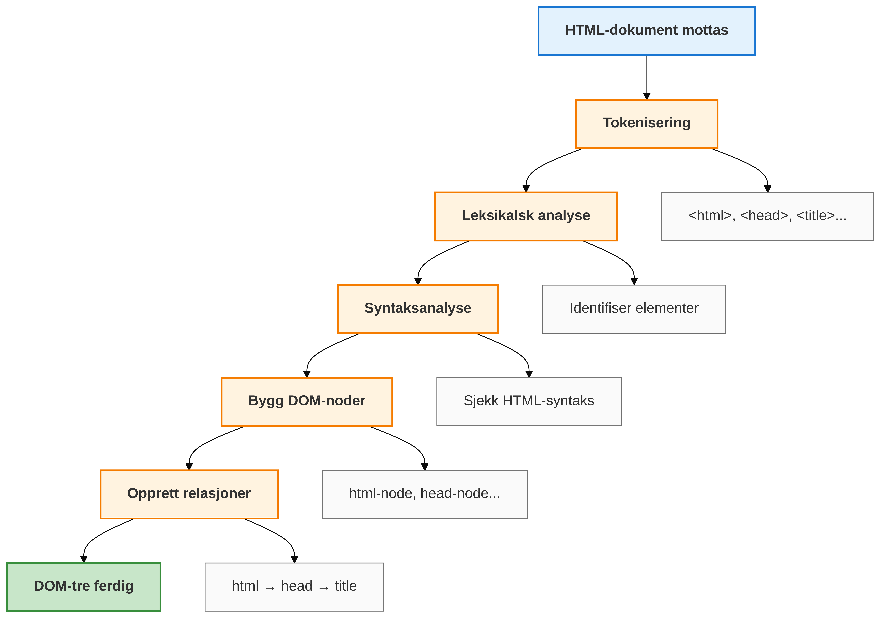
Diagrammet under viser et eksempel på DOM-hierarkiet av elementene.
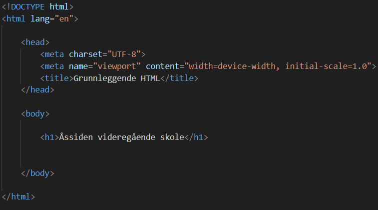
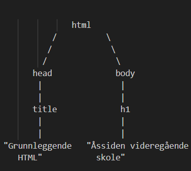
<html> er rotelementet i dokumentet.
Alle andre elementer er etterkommere av dette.
<html> har to direkte barn: <head> og <body>. Head-elementet inneholder et title-element. Teksten "Grunnleggende HTML" er innholdet i title-elementet.
Body-elementet inneholder et h1-element (en overskrift). Teksten "Åssiden videregående skole" er innholdet i h1-elementet.
Etter at DOM-strukturen er opprettet, vil nettleseren vise elementene på skjermen.
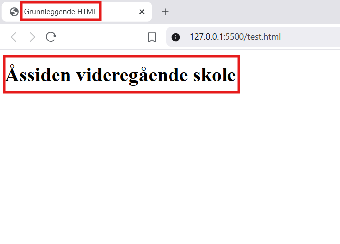
Du finner mer informasjon om Tagger og HTML-struktur HER.
Introduksjon til GIT og GitHub
Hva er GIT?
Git er et versjonskontrollsystem (et dataprogram) som lar deg spore endringer i filer over tid.
Tenk på det som en "tidsmaskin" for koden din – du kan alltid gå tilbake til tidligere versjoner hvis noe går galt.
Git er som å ta "øyeblikksbilder" (snapshots) av prosjektet
ditt hver gang du gjør endringer. Disse øyeblikksbildene kalles "commits".
Hva er GitHub
GitHub er en nettbasert plattform som bruker Git.
Det er som en "skylagring" for kodeprosjektene dine, men med superkrefter
for samarbeid.
Hvorfor bruker vi Git og GitHub?
Med et versjonskontrollsystem kan du spore alle endringer i koden, og du kan enkelt gå tilbake
til en tidligere versjon. Om du samarbeider med andre elever/utviklere kan du
se hvem som har gjort hvilke endringer og når. Flere elever kan jobbe på samme prosjekt samtidig,
siden GitHub tillater dere automatisk sammenslåing av endringer med konfliktløsning når flere
endrer samme fil. GitHub er perfekt for personlig utvikling siden plattformen viser arbeidshistorikken
til potensielle arbeidsgivere. GitHub er i dag "standardverktøy" i IT-bransjen. Store og små bedrifter
i både offentlig og privat sektor bruker Git og GitHub, og noen av disse er:
Velg et brukernavn. Det må være unikt, og kan inneholde bokstaver, tall og andre skrifttegn som @ eller # om du ønsker
Skriv inn epostadressen din. Det må være samme epostadresse du konfigurerer GIT med
Velg et passord.
Steg 3
Løs Captcha (verifiser at du ikke er en robot)
Steg 4
Velg en plan: Velg "free"
Steg 5
Aktiver GitHub-kontoen din. Sjekk e-postkassen din og se etter en e-post fra GitHub
Den har "Please verify your email address" som emne
Klikk på "Verify your email address"-knappen.
Du blir omdirigert til GitHub og kontoen din er nå aktivert
Steg 6
Logg inn første gang:
Skriv inn brukernavn og passord
Klikk på "Sign in"
Rediger profilen din / last opp bilder om du ønsker det.
Opprett første repositorium
Logg inn og klikk deretter på bildet ditt – øverst til høyre på siden –
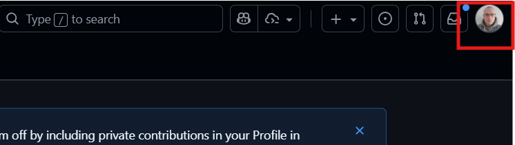
En pop-up-meny kommer opp med flere valg. Klikk på "Your repositories"
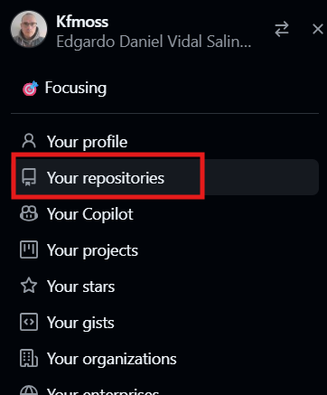
Hvis dette er første gang du bruker GitHub, skal du bare se noen knapper. Finn "New"-knappen
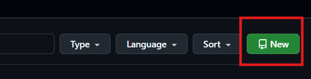
Gi et navn til repoet ditt og klikk på "Create repository"
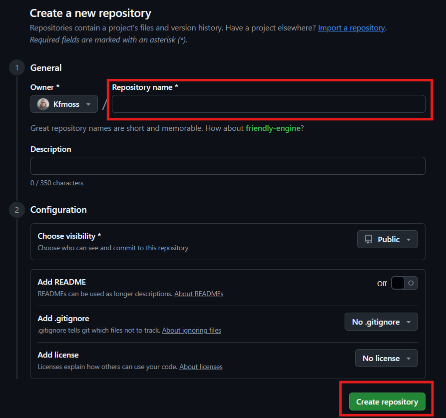
Deretter får du to lister med kommandoer. Du skal bare bruke 3 av disse
Oppgaver
Arbeidsmåte og levering
I dette prosjektet skal du lære om grunnleggende
konsepter i HTML. Dette danner et viktig fundament for
videre arbeid med webutviklingsprosjekter. Det er også en
fordel å bli godt kjent med PC-en din og funksjonene den
tilbyr. Dere skal jobbe i par, noe som gir mulighet til
samarbeid og erfaringsdeling. Prosjektet leveres likevel
individuelt i Teams.
Dette prosjektet blir vurdert som enten godkjent
eller ikke godkjent. Selv om du ikke får karakter på
akkurat dette, er det viktig å ta det seriøst. Det du
lærer her skal du bruke i senere prosjekter hvor du får
karakter, og det gir deg et godt grunnlag for mer
avanserte oppgaver. Konseptene du øver på nå er også
nyttige videre på VG2.
. Vurderingsform : Godkjent/Ikke godkjent Frist for innlevering: 04.sept kl.15
Lag din egen nettside
I denne oppgaven skal du bruke HTML-tagger til å lage en
egen artikkel om et tema du velger.
Det er ingen begrensning på hvor mye du kan skrive,
men husk å forklare tankene og meningene dine tydelig.
Du kan også bruke bilder, videoer og lenker til ressurser
på internett for å gjøre innholdet mer spennende.
Hvis du allerede kan litt HTML og CSS, kan du prøve deg
på Oppgave B. Dersom dette er første gang du koder i HTML,
holder det at du leverer Oppgave A.
Dere skal i tillegg skrive en kort logg (rapport) der
du beskriver arbeidsprosessen i prosjektet. Her kan
du også fortelle hva du har lært og hvor vanskelig
du synes prosjektet var. I tillegg skal du fylle ut og levere et KI-skjema, der du forklarer hvordan du har brukt KI i arbeidet ditt.
Oppgave A - Lag en enkel nettside om ett av disse temaene:
Jeg som IM-elev på Åssiden videregående skole
Mine planer etter VG2
Demokrati og ytringsfrihet på skolen
Falske nyheter
PC-hardware
Personvern i sosiale medier
Oppgave B - Lag en nettside om ett av temaene fra Oppgave A,
men med mer innhold og funksjonalitet:
Bruk bilder, videoer eller andre medier som HTML støtter.
Lag et enkelt kontaktskjema ved å bruke <form>-taggen.
Det er ikke krav om CSS, men du kan bruke det om du ønsker (CSS teller ikke i vurderingen).
Publiser nettsiden på Vercel, slik at alle med lenken kan se den.